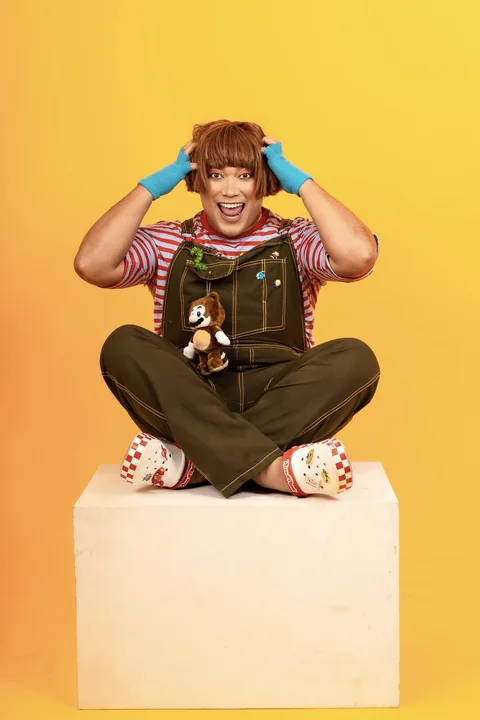

JORGE CARLOS
Un niño muy Travieso de 5 años muy inteligente ya que creció rodeado de adultos, consentido, irreverente, conveniente, con proyección a futuro de convertirse en una gran estrella ⭐️

Un niño muy Travieso de 5 años muy inteligente ya que creció rodeado de adultos, consentido, irreverente, conveniente, con proyección a futuro de convertirse en una gran estrella ⭐️